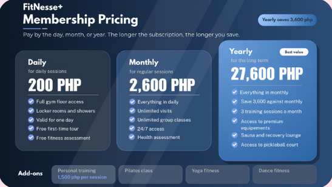
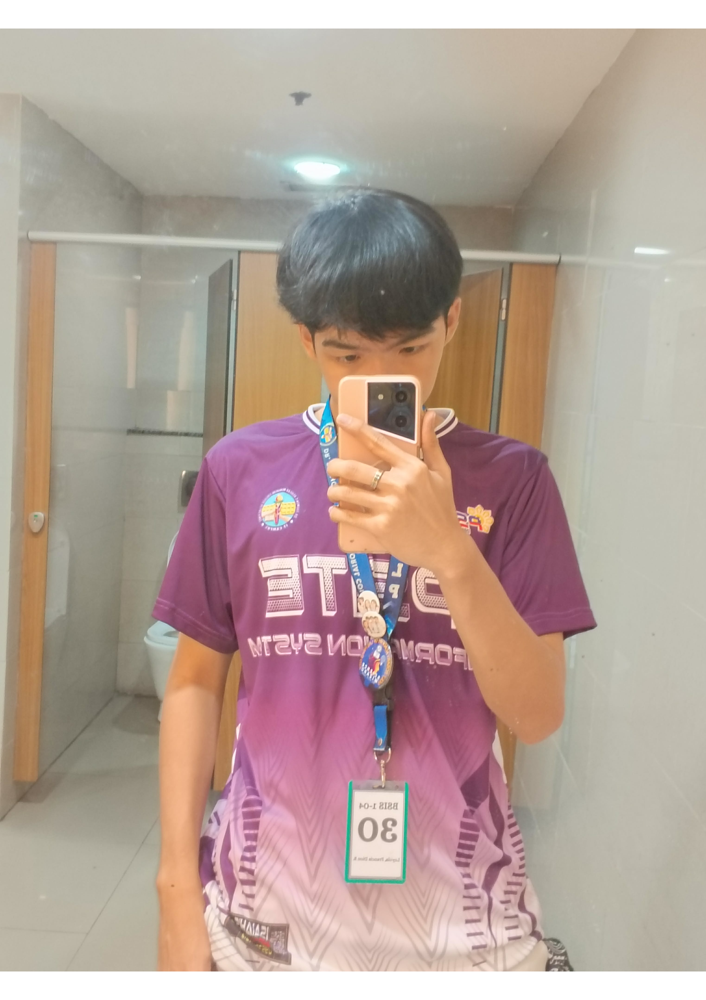
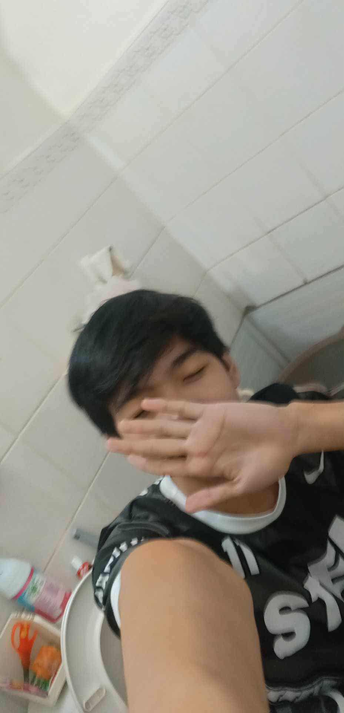
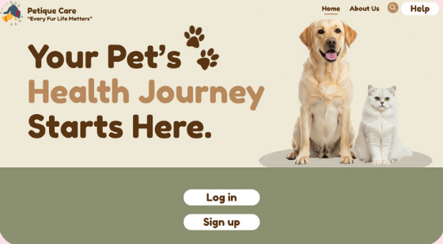

This is our first project the Price planning is about the promo prices for gym membership. It includes the prices for daily, monthly, and yearly promos.


Hi, my name is Francis, and I am a second-year Information Systems student at DFCAMCLP. In my free time, I like to play sports such as basketball, volleyball, and badminton. Playing sports keeps my body active and helps me stay healthy. It also helps me relax when I have problems or when I cannot think clearly. After I play, I feel calm and ready to focus again.
I also like to explore new things that can help me learn more. I enjoy reading about technology, watching tutorials, and trying new ideas. These interests help me grow my skills and think in creative ways. I believe that learning new things and staying active can help me become a better student and a better person.
Programming:
Python, Java,
HTML, CSS,
JavaScript


This is our first project the Price planning is about the promo prices for gym membership. It includes the prices for daily, monthly, and yearly promos.

Our second project is The Petique Care website helps pet owners find health information for their pets. It also helps them keep track of what their pets need